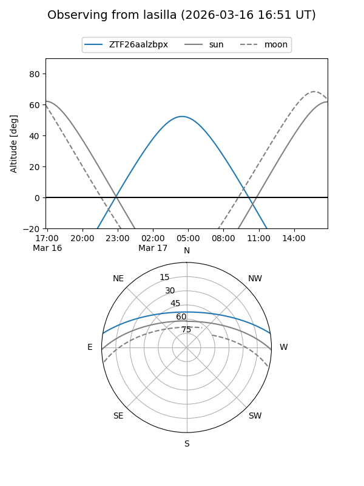
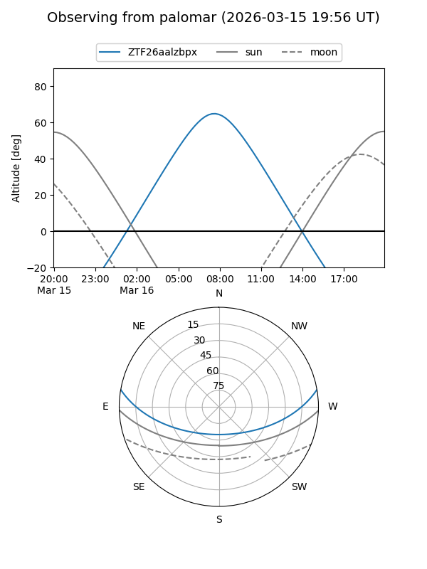

ZTF26aalzbpx
Target ZTF26aalzbpx at 2026-03-16 11:50
Aliases and brokers:
FINK: link
Lasair: link
ALeRCE: link
alt names
ZTF26aalzbpx (ztf,fink_ztf)
Coordinates:
equatorial (ra, dec) = 170.8494,+8.45102
equatorial (HMS+DMS) = 11:23:23.86,+08:27:03.66
galactic (l, b) = (250.7145,+62.02810)
Flags:
Photometry:
last ztfg=15.19
1 ztfg detections
Lightcurve
Visibility


Additional plots